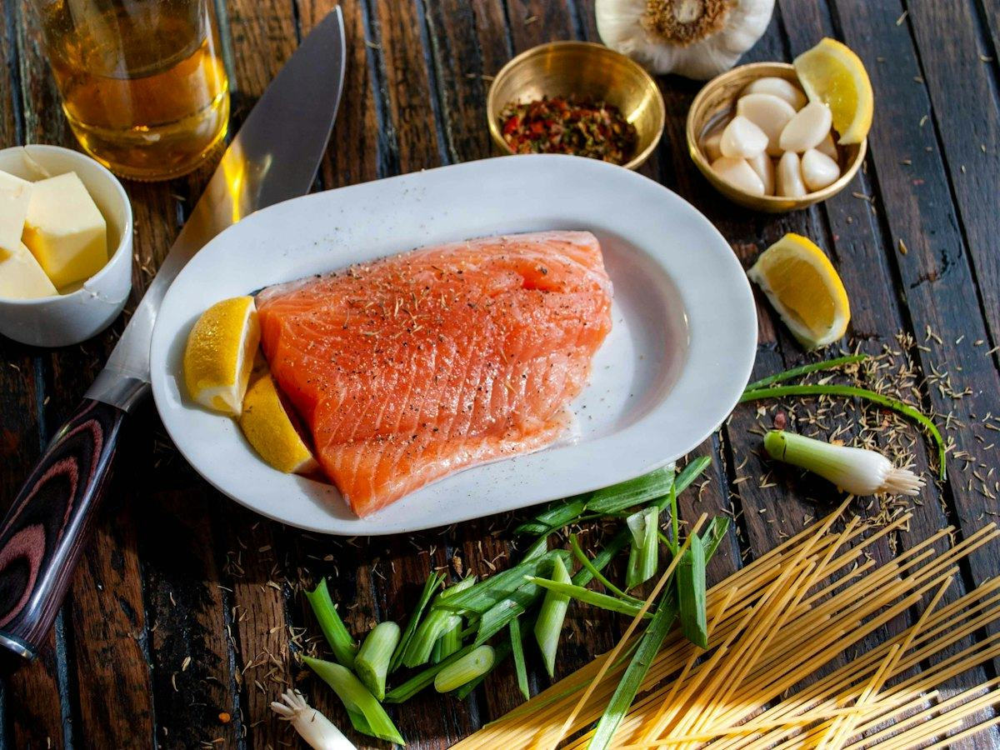
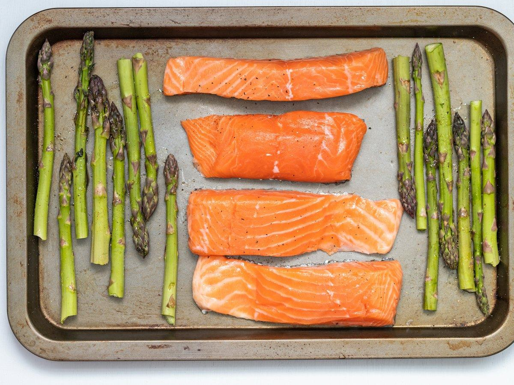
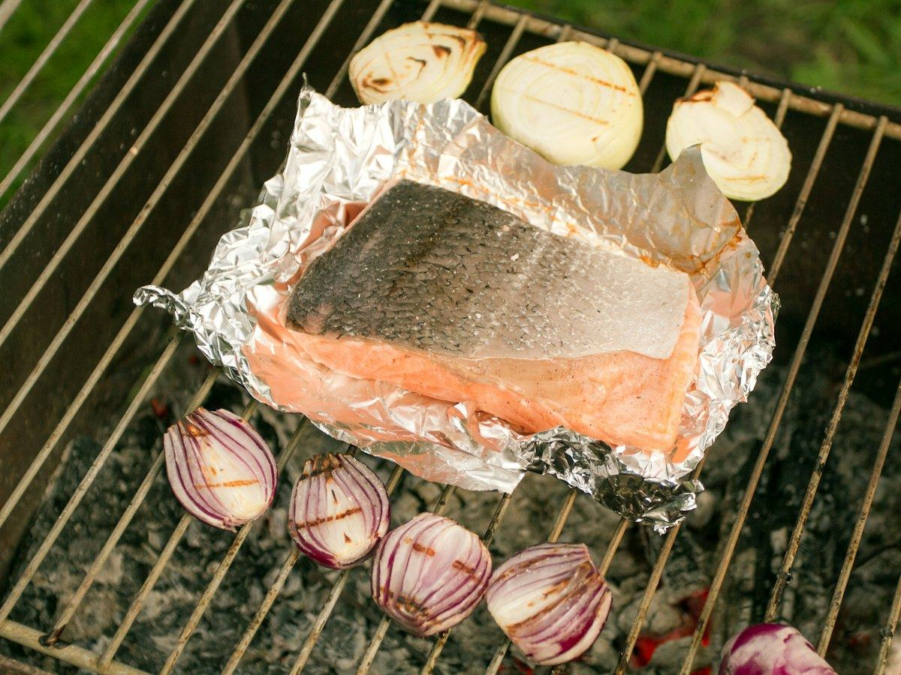
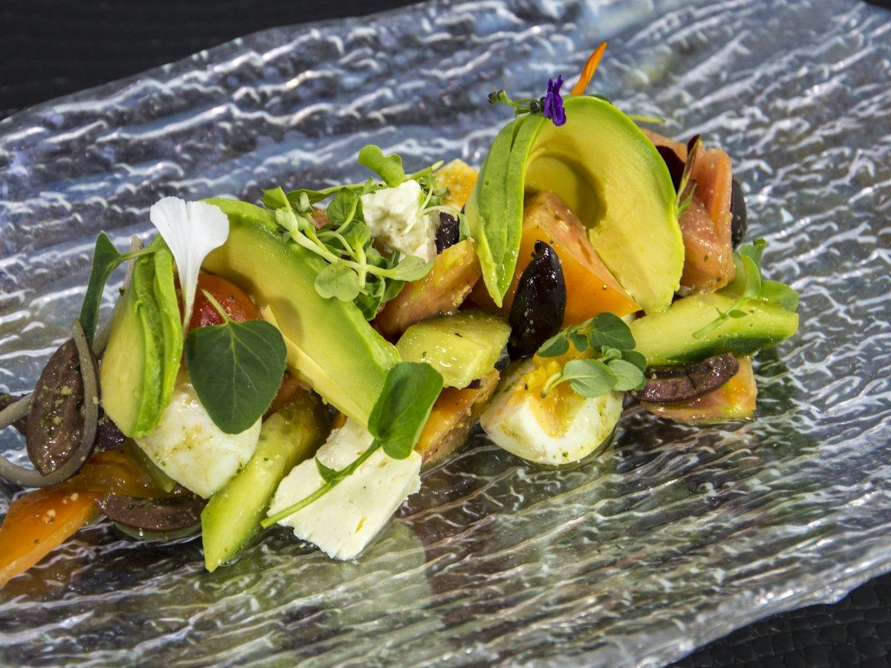

Recetas
3 recetas de merluza fáciles: a la gallega, al horno y a la plancha
Merluza a la gallega, al horno con pimientos y a la plancha con verduras. Tres recetas de pescado blanco con su información nutricional.
 Por el equipo editorial de Pombo AI
Por el equipo editorial de Pombo AI
12 nov 2026 · 7 min de lectura

El salmón se cocina en minutos y casi no necesita aceite. Estas tres recetas cubren el horno, el papillote y una ensalada, cada una con su tabla nutricional.

Bandeja de horno con todo: patata, espárragos y salmón. Sin cacharros que fregar.
| Proteínas | 36 g | 29 % |
|---|---|---|
| Hidratos de carbono | 31 g | 25 % |
| Grasas | 25 g | 46 % |
| Fibra | 6 g |
El % indica de dónde viene la energía del plato.
Proteína y la grasa propia del pescado azul, con hidratos de la patata y fibra de los espárragos. Un plato completo.

El papillote cocina el pescado en su propio vapor: queda jugoso y casi sin aceite.
| Proteínas | 32 g | 34 % |
|---|---|---|
| Hidratos de carbono | 12 g | 12 % |
| Grasas | 23 g | 54 % |
| Fibra | 3 g |
El % indica de dónde viene la energía del plato.
Mucha proteína con pocos hidratos. Casi toda la grasa viene del propio salmón, porque apenas lleva aceite.

Una ensalada templada con salmón a la plancha. Si te sobra salmón del día anterior, mejor aún.
| Proteínas | 24 g | 23 % |
|---|---|---|
| Hidratos de carbono | 12 g | 12 % |
| Grasas | 29 g | 65 % |
| Fibra | 6 g |
El % indica de dónde viene la energía del plato.
La más grasa de las tres por el aguacate y el salmón, con pocos hidratos. Buena opción si sigues una alimentación baja en hidratos.
Cómo calculamos los valores: sumamos los ingredientes con la base pública del USDA (FoodData Central, SR Legacy) y dividimos entre las raciones. Son aproximaciones: cambian según la marca, el tamaño y la cocción. Los sellos "fuente de" y "alta en" siguen los criterios del Reglamento (CE) 1924/2006. Para saber lo que comes de verdad, haz una foto a tu plato con Pombo AI.
¿Quieres comerlo crudo? Antes lee cómo evitar el anisakis en casa. Y si quieres más ideas, mira las recetas de merluza y los beneficios del pescado.
¿Cuánto comes de verdad?
Con Pombo AI haces una foto a tu plato y la inteligencia artificial estima calorías, proteínas, hidratos y grasas en segundos. Es una estimación orientativa, no un dato médico.
El salmón es pescado azul. Las recomendaciones de la AESAN proponen 3 o más raciones de pescado a la semana, priorizando el azul, así que el salmón puede ser una de ellas, alternando con otros pescados.
Para comerlo crudo o poco hecho (sushi, tartar) hay que congelarlo antes para eliminar el anisakis. Lo explicamos en nuestra guía del anisakis.
Aviso: Este artículo es informativo y no sustituye el consejo de un médico o dietista-nutricionista. Si tienes una enfermedad, tomas medicación, estás embarazada o has tenido un trastorno de la conducta alimentaria, consulta con un profesional antes de cambiar tu alimentación.
Merluza a la gallega, al horno con pimientos y a la plancha con verduras. Tres recetas de pescado blanco con su información nutricional.
Ensalada de pasta integral con atún, tostada de atún y aguacate y tomates rellenos. Recetas fáciles con su información nutricional.
Tosta de sardinas, ensalada de patata con sardinas y pasta integral con sardinas en tomate. Recetas con pescado azul y su información nutricional.